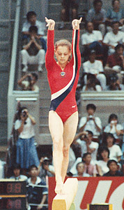

Tatiana Frolova (USSR)
1985 University Games AA Bronze Medalist

Medal Total
World Championships: 1 Gold
Tatiana was born on April 26,
1967 in Bryansk. She was coached by Vladimir Siskin at Trud.
She currently is a coach in Canada.
Competition Results
- 1980
Jr. USSR Championships: 11th AA
Jr. USSR-GDR Dual Meet: 1st Team, 3rd AA
- 1981
- Ennia Gold Cup: 3rd AA, 2nd V, 2nd FX, 5th B
- Moscow News: 3rd AA, 1st V
Schoolchildren's Spartakiade: 4th Team, 2nd FX
USSR Championships: 13th AA, 2nd UB, 7th B
- USSR Cup: 2nd AA, 1st V
-
- 1982
- American Cup: 6th AA
-
- 1983
- Riga International: 1st AA, 1st FX, 2nd UB, 3rd V, 3rd
B
- RSFSR Spartakiad: 4th AA
- USA-USSR Dual Meet: 1st Team, 8th AA
USSR Championships: 15th AA, 3rd V, 3rd FX
- USSR Cup: 6th AA, 1st FX, 4th B, 5th V
- USSR Spartakiad: 1st Team, 6th AA
- World Championships: 1st Team, 5th AA,
4th UB, 5th B
-
- 1984
- CSSR Spartakiade (Olomouc): 1st Team
- Beijing International: 2nd AA, 1st UB
- Riga International: 1st AA, 1st UB, 1st
FX, 3rd B
USSR Cup: 2nd AA
-
- 1985
- University Games: 1st Team, 3rd AA, 6th B, 7th UB
USSR Championships: 5th AA
USSR Cup: 15th AA, 8th V
This page was last updated on August 3, 2026.
© Gymn Forum